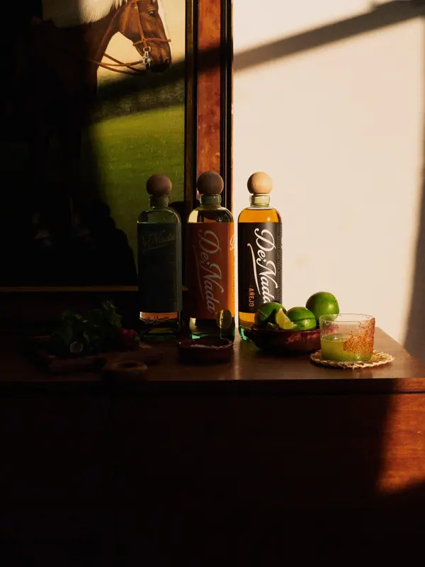

De Nada Tequila, at a glance.
Everything about the brand in one place, kept current. Journalists, buyers and anyone else: if it’s here, it’s accurate.
Last updated November 7, 2026. Questions or corrections: press@denadatequila.com

In one paragraph
De Nada is a single-estate tequila made at Feliciano Vivanco y Asociados (NOM 1414) in the highlands of Jalisco, Mexico. It was founded by Danny Neeson and Adam Millman, who met at Tulane, filled their first bottles in the fall of 2020 and sold them door to door in New York from January 2021. Danny started the brand to honor his mother, Natasha Richardson, and her gift for making people feel at home, so De Nada is built around hospitality: the name means “you’re welcome.” It comes as a Blanco, a Reposado and an Añejo in recycled glass, and is sold online and in bars and shops across the U.S. through Luxury Spirits International.
Quick facts
The details people ask about most.| Name | De Nada Tequila. Also written DE-NADA on older labels, retail listings and press. “De nada” is Spanish for “you’re welcome.” |
|---|---|
| Company | DNA Spirits, LLC, Stony Point, New York |
| Founders | Danny Neeson (Co-Founder & President) and Adam Millman (Co-Founder & CEO). They met at Tulane University in New Orleans. |
| Category | 100% blue Weber agave tequila: Blanco, Reposado and Añejo |
| Made at | Feliciano Vivanco y Asociados, NOM 1414, Arandas, in the highlands (Los Altos) of Jalisco, Mexico. Single estate: the agave is grown on the Vivanco family’s land. |
| Distillers | Sergio Cruz and Cesar Vivanco |
| How it’s made | Agave cooked in stone and brick ovens, crushed with a roller mill, fermented open-air in stainless steel with champagne yeast, distilled twice in copper pot stills, made with deep-well water |
| Ingredients | Agave, water and champagne yeast |
| Strength | 40% ABV (80 proof) |
| Bottle | Premium recycled glass with a natural wood stopper, 700 mL, plus 1 L Blanco and Reposado in bars and shops. In 2024 De Nada introduced the first aluminum tequila bottle; in October 2026 the range moved to recycled glass, so older articles describe the aluminum bottle. |
| Also | Gluten free, kosher certified, carbon neutral brand |
| Where to buy | Online at denadatequila.com, shipped by licensed retailers to most U.S. states. In bars and shops through Luxury Spirits International, the brand’s U.S. importer, and its distributors (Empire Merchants in New York). |
| Known for | Hospitality. The brand is built around being a good host, and it has been poured on CNN’s New Year’s Eve broadcast every year from 2021 to 2025. |
The bottles
Online prices for 700 mL. Any three ship free.Blanco
Bright and agave-forward with vanilla and lime and a gently smoky finish. The one for margaritas and palomas.
See the BlancoReposado
Rested at least four months in ex-bourbon American oak: vanilla, caramel and oak. Robb Report’s best reposado for cocktails.
See the ReposadoAñejo
More than twelve months in the same barrels: chocolate and baking spice, with a delicate finish. For sipping.
See the AñejoRecognition
Only what we can point to.- Robb Report, 2026: Best reposado for cocktails, in “The 11 Best Reposado Tequila Brands to Buy Now” (source)
- Agavos Awards 2026: Gold, Blanco and Añejo
- Agavos Awards 2025: Double Gold, Blanco. Gold, Reposado
- San Francisco World Spirits Competition 2022: Gold, Reposado (source)
- VinePair, 2022: 93 points, Blanco (source)
- CNN New Year’s Eve Live, 2021 to 2025: Poured on set five years running
More coverage, interviews and a press kit on the press page.
Timeline
- 2020: First bottles filled at NOM 1414.
- 2021: Sold door to door in New York, then distributed in New York and New Jersey.
- 2022: Available online across the U.S.
- 2024: The first aluminum tequila bottle.
- 2025: National partnership with Luxury Spirits International.
- 2026: Recycled glass, the Añejo and the 1 L.
Common questions
What is De Nada Tequila?
De Nada is a single-estate tequila from the highlands of Jalisco, made at NOM 1414 (Feliciano Vivanco y Asociados) and founded by Danny Neeson and Adam Millman. It comes as a Blanco, a Reposado and an Añejo, and is built around hospitality: the name means “you’re welcome.”
Is De Nada the same as DE-NADA Tequila?
Yes. DE-NADA is the same brand, written the way it appeared on earlier labels and in some retail listings and press. The company behind it is DNA Spirits, LLC.
Who owns De Nada Tequila?
De Nada was founded by Danny Neeson and Adam Millman, who still run it. Danny is co-founder and president; Adam is co-founder and CEO.
Where is De Nada made?
At Feliciano Vivanco y Asociados (NOM 1414) in Arandas, in the highlands of Jalisco, Mexico, from agave grown on the Vivanco family estate.
Is De Nada sold in an aluminum bottle?
De Nada introduced the first aluminum tequila bottle in 2024. In October 2026 it moved to premium recycled glass and added the Añejo, so articles from 2024 and 2025 describe the aluminum bottle.
How much does De Nada cost?
On denadatequila.com: Blanco $49.99, Reposado $54.99 and Añejo $79.99 for 700 mL. Shipping is free on three or more bottles. Prices in bars and shops are set by each retailer.
Which De Nada is best for margaritas?
The Blanco. Our house margarita is a Tommy’s: 2 oz De Nada Blanco, 1 oz fresh lime juice and ½ oz agave nectar. Robb Report also named the Reposado the best reposado for cocktails.
Is De Nada a good gift?
It was made to be one. The brand is built around hosting, and a bottle is the gift that gets opened the same night. See the host gift guide for ideas by budget.